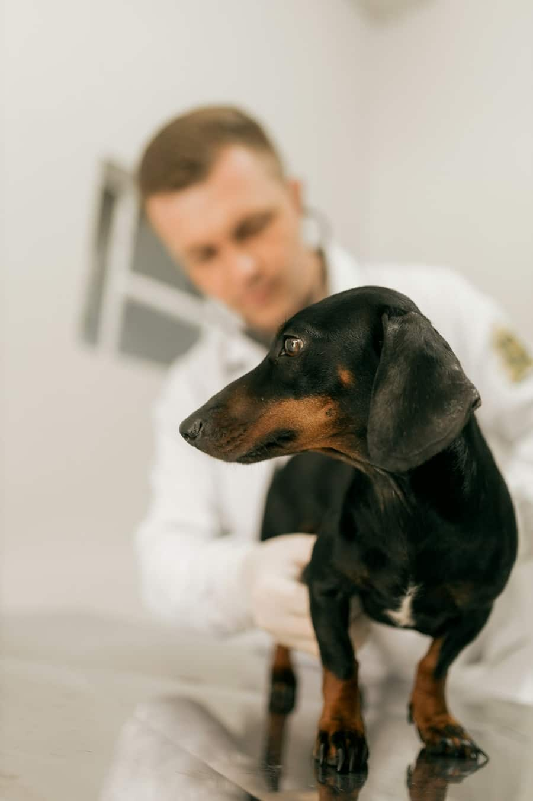
Soins courants
Consultations
Examen complet de 30 minutes, conseils nutrition et comportement, suivi des maladies chroniques.
À partir de 45 €
Douze services, un devis systématique, aucune mauvaise surprise.
01 Catalogue

Examen complet de 30 minutes, conseils nutrition et comportement, suivi des maladies chroniques.
À partir de 45 €
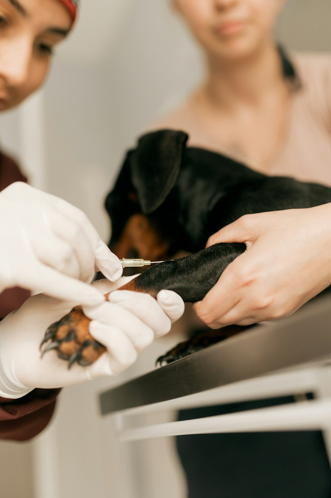
Primo-vaccination, rappels, antiparasitaires, identification par puce et passeport européen.
Rappel vaccinal : 62 €
Stérilisation, tissus mous, orthopédie (ligaments croisés, fractures) sous anesthésie monitorée.
Sur devis
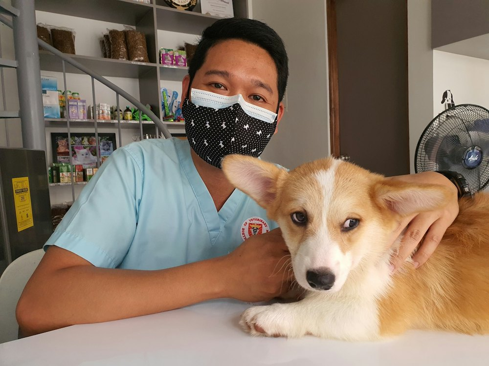
Vétérinaire de garde chaque nuit, week-ends et jours fériés. Hospitalisation surveillée.
Majoration de nuit : 60 €
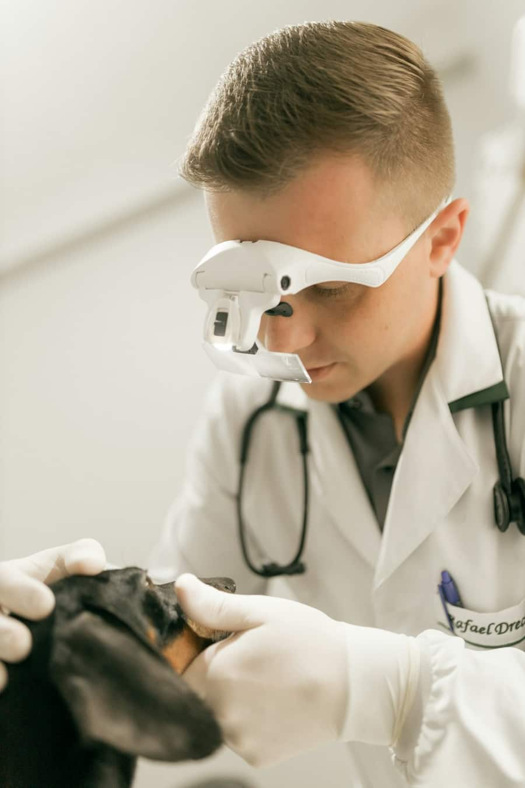
Détartrage aux ultrasons, polissage, extractions et radiographies dentaires.
Détartrage : à partir de 140 €
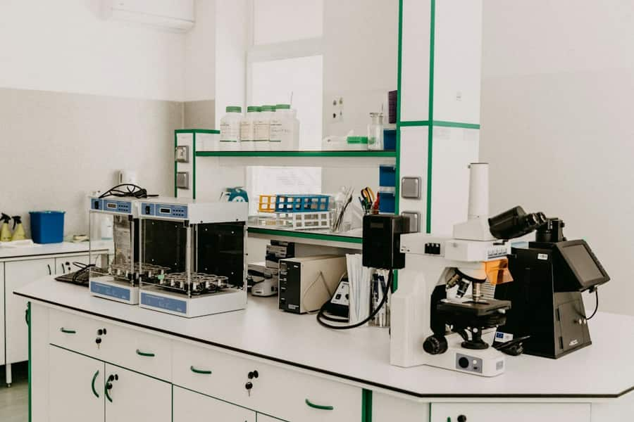
Radiographie numérique, échographie, analyses sanguines et urinaires avec résultats en 30 min.
Bilan sanguin : 75 €
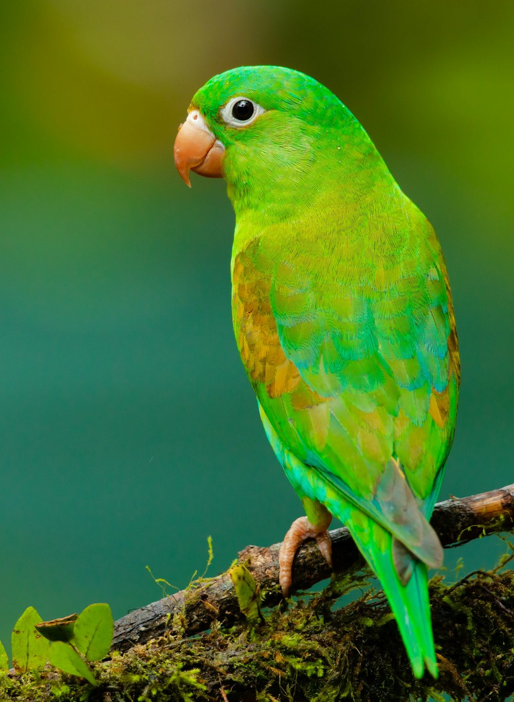
Lapins, cochons d'Inde, furets, reptiles et oiseaux : soins, griffes, bec et stérilisation.
Consultation NAC : 50 €
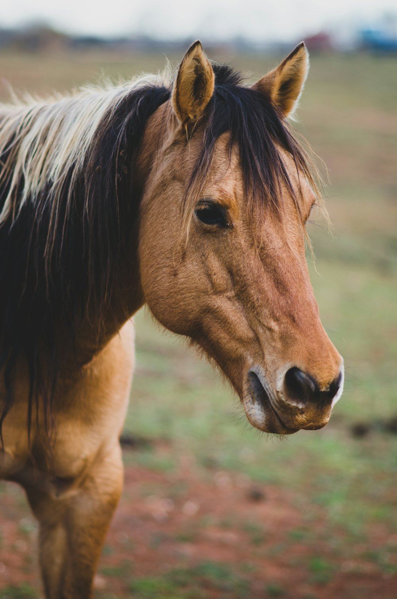
Visites en écurie dans un rayon de 40 km : vaccins, dentisterie équine, boiteries.
Déplacement : 35 €
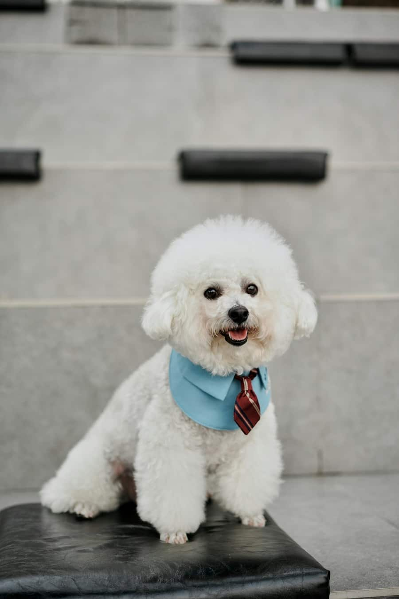
Bains dermatologiques, tonte sous sédation légère, coupe de griffes, soins des oreilles.
À partir de 30 €
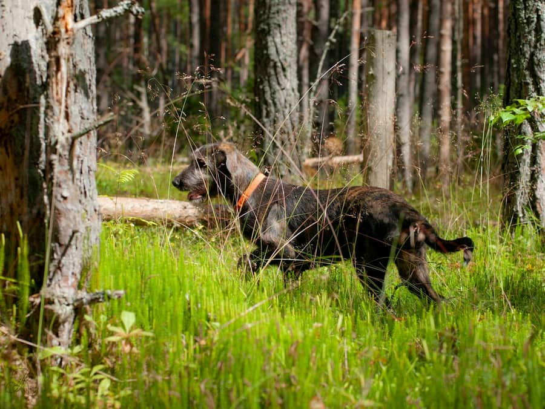
Rééducation encadrée dans notre pinède de 2 ha : marche sur sable, obstacles doux, suivi par le chirurgien.
Séance de 45 min : 38 €
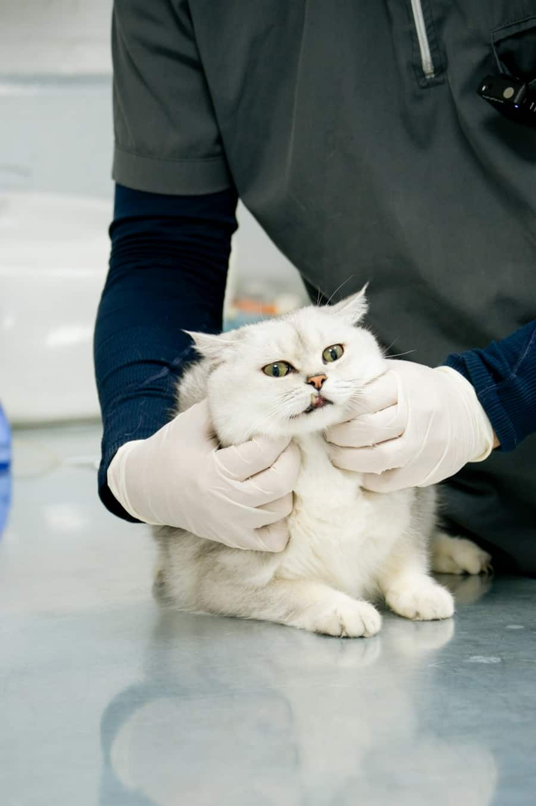
Entrée, salle d'attente et consultation dédiées aux chats, loin des aboiements.
Bilan félin senior : 89 €
Consultation comportementale, « école des chiots » le samedi, gestion de l'anxiété.
Atelier chiots : 20 €
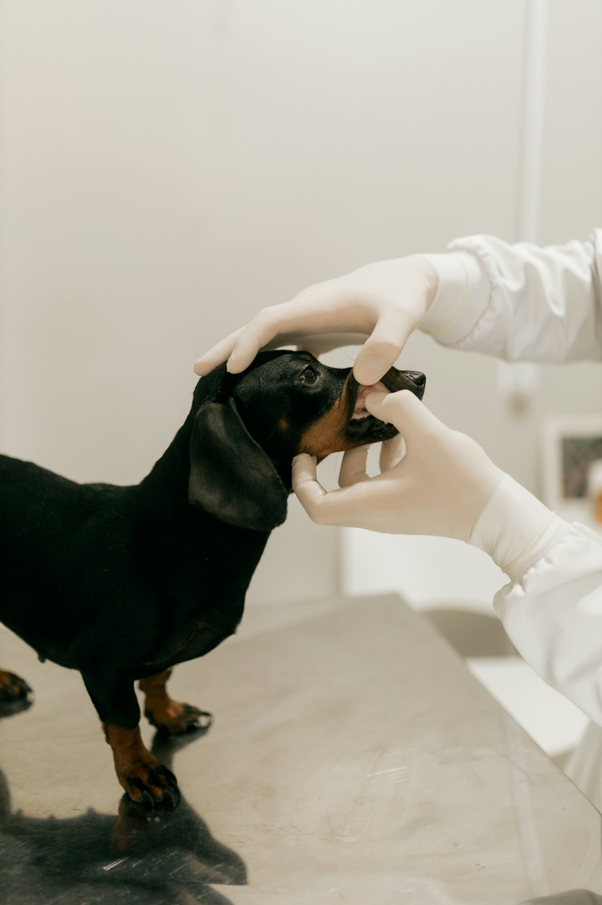
02 Comment ça se passe ?
En ligne, par téléphone ou via notre assistante Sylva.
Salle d'attente séparée chiens / chats et friandises.
Diagnostic expliqué, devis écrit avant tout acte.
Compte-rendu par e-mail et rappel des prochains soins.
03 Transparence
Prix TTC 2026, hors médicaments. Un devis précis vous est remis avant chaque intervention.
| Acte | Chien | Chat | NAC |
|---|---|---|---|
| Consultation | 45 € | 45 € | 50 € |
| Vaccination annuelle | 62 € | 58 € | 45 € |
| Identification par puce | 65 € | 65 € | 55 € |
| Stérilisation femelle | dès 280 € | 160 € | dès 110 € |
| Détartrage | dès 140 € | dès 120 € | — |
| Séance Sentier des Pins | 38 € | — | — |
04 FAQ
Sylva, notre assistante, vous oriente en quelques secondes.
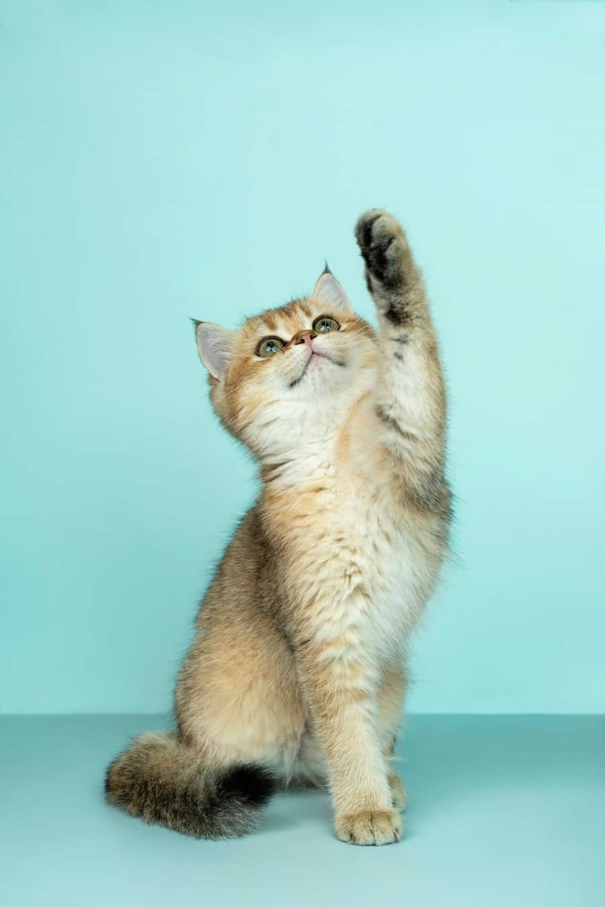